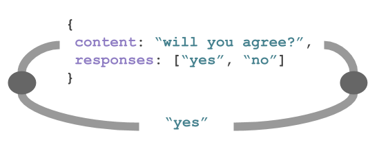

<!-- _coverpage.md -->
<p></p>
<p></p>
<h1>A serverless communication platform for <i>request <-> response</i> based messaging. <br></h1>
<br>
<p></p>
<br>
<!--h3>
    <ul>
    	<!--i style="color:#666666">KJU works on a super simple concept:</i>
        <li>1. Producers create messages with predefined responses</li>
        <li>2. Consumers redeem responses via webhook or API</li>
        <li>3. Producers get insights into message responses</li>
        <br->
        <li>Embeddable into any system, adobtable in use case</li>
        <li>Simple interface served via Webhoocks, REST and JS SDK</li>
        <li>Token-based auth/rbac. <u>No Registration or login required</u>!</li>
    </ul>
</h3-->
<p>
    <a href="#API?id=getting-started">Get started</a>
    <a href="https://github.com/kju-org/kju-client">JS SDK</a>
    <a href="#API?id=api">API</a>
</p>
